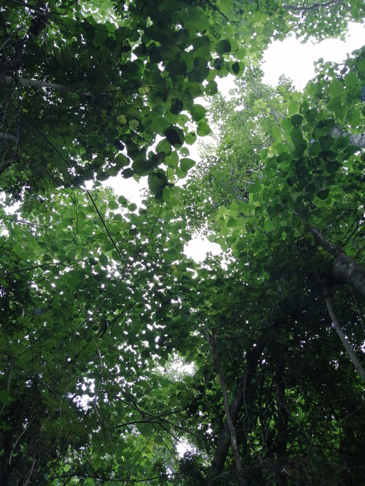
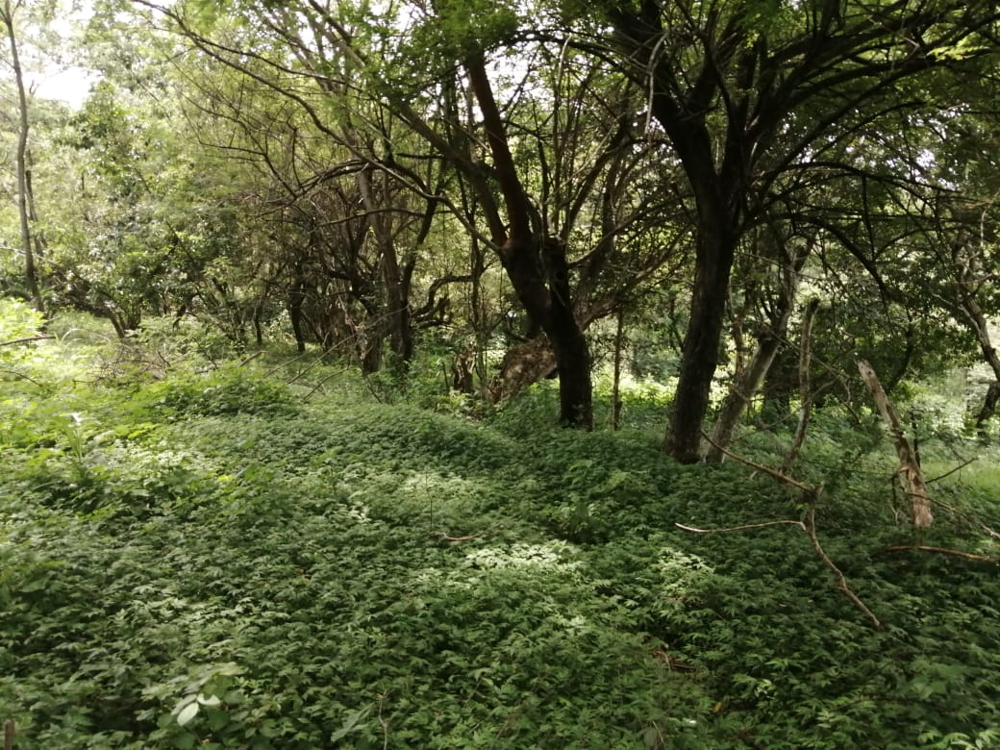

LOS ARBOLES
En un ecosistema, los árboles son organismos clave que actúan como productores primarios,
transformando la
energía solar en alimento a través de la fotosíntesis. Su importancia es enorme. Hay un dicho que dice; No
podriamos vivir sin los arboles ellos nos dan vida, son la razon por la cual respiramos aire natural que dan
vida a nuestros pulmones, deberiamos cuidarnos mucho más


Datos sobre los arboles
Estaba buscando informacion de los arboles y encontre algo super interesante
Los árboles pueden hacer ruido Aunque no lo podemos oír sin tecnología especial, los árboles emiten
sonidos cuando están bajo estrés, como la falta de agua. Estos ruidos son llamados "cavidades" y se producen
cuando las burbujas de aire interrumpen el flujo de agua en sus sistemas vasculares.
Esta parte de los arboles me dejo muy asombrada
Los árboles pueden clonar Algunos árboles pueden reproducirse asexualmente mediante un proceso llamado clonación
vegetativa. Por ejemplo, el álamo temblón en Utah, conocido como "Pando", es una colonia clonal que comparte un solo
sistema de raíces y es considerado uno de los organismos vivos más grandes y antiguos del mundo.